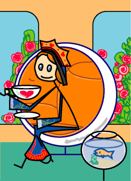

→
Damian Cugley →
Alleged Tarot 2002 →
png →
→
Damian Cugley →
Alleged Tarot 2002 →
png →
| « The Knight of Cups | The King of Cups » | |
|  | ||
|
The Queen of Wands The Queen of Swords The Queen of Coins |
||
Upright: a warm, sympathetic and sociable woman
Reversed: a vain and immoral woman, deceitful and peverse
The chair is the Ball (of Globe) chair, designed by Eero Aarnio around 1963–65. I chose it because of its shape—it is one of the most cup-like famous chair designs, so particularly appropriate to this, the most feminine of Cups cards (the Queens and the suit of Cups both being the associated with the feminine element of water).
See also Thirteen’s description on the Aeclectic Tarot site
If your browser supports SVG, then you should visit the SVG version of this page. It is so much more cool!